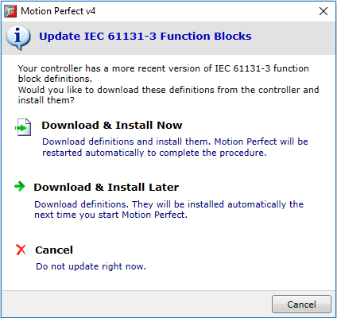
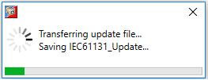
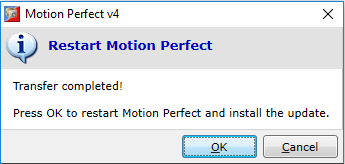

Each firmware version supports a fixed set of IEC 61131-3 functions and function blocks. The set of supported functions and function blocks is installed by Motion Perfect setup on the PC, because it needs this set when compiling IEC 61131-3 tasks in a project.
When new functions and function blocks are added in the controller firmware, the set of supported functions and function blocks needs to be updated, and this usually happens by installing a newer version of Motion Perfect. However, with the latest Motion Perfect version and controller firmware starting with v2.0274, there is an automated update mechanism, which allows Motion Perfect to download the set of supported functions and function blocks from the controller to the PC.
When Motion Perfect detects that the remote (controller) version of the supported functions set is more recent than the local (PC), it displays the following dialog:

When “Download & Install Now” or “Download & Install Later” is chosen, Motion Perfect starts downloading on the PC the set of supported functions and function blocks.

When the transfer has completed and the option “Download & Install Now” has been chosen, a message to restart Motion Perfect is displayed.

|
Command |
Description |
|
OK |
Motion Perfect restarts automatically and updates are installed. |
|
Cancel |
The update procedure is canceled. The update message will be displayed again the next time Motion Perfect connects in Sync mode to a controller and detects that the controller definitions are more up to date. |